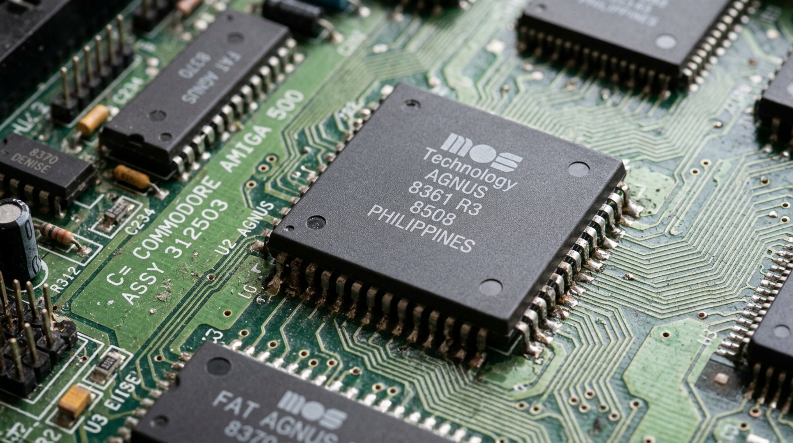

The Magic of the Amiga Copper
Hey Amiga fans! Ever looked at a stunning Amiga demo or game and wondered how they pulled off those amazing color effects? You know the ones – the vibrant, multi-colored skies that seem to defy the Amiga’s color limits, or a screen that’s split into different color palettes? The secret, my friends, often lies in one of the Amiga’s most unique and powerful hardware features: the Copper.
What is the Copper?
In the heart of the Amiga’s custom chipset lies a special co-processor called the Copper. Think of it as a tiny, dedicated graphics programmer that works alongside the main CPU. While the CPU is busy running the game’s logic or your Workbench applications, the Copper is tirelessly manipulating the display hardware.
The Copper’s job is simple but powerful: it can change the contents of the Amiga’s hardware registers at very specific moments in time. This is key. It’s all about timing. The Amiga generates its display by drawing the screen line by line, from top to bottom. The Copper can be programmed to “watch” for a specific screen line and, at the precise moment the video beam reaches that line, it can zap a new value into a hardware register.
How Copper Lists Work
So, how do you tell the Copper what to do? You create a Copper list, which is just a simple program for the Copper to follow. This list is a series of instructions that the Copper executes in sync with the screen drawing.
A Copper list is made up of just three basic instructions:
- WAIT: Pause until the video beam reaches a specific horizontal and vertical position on the screen.
- MOVE: Write a value to a specified hardware register.
- SKIP: Skip the next instruction if the video beam has already passed a certain position.
By combining these simple instructions, you can create some truly amazing effects.

Split-Screen Color Gradient in Assembly
This assembly program will create a screen that is white on the top half and blue on the bottom half. It’s a fundamental technique that demonstrates the core Copper list concept.
The Complete Code:
;-----------------------------------------------------
; split_screen.asm
; A simple Copper List example in 68k Assembly
; Splits the screen into two colors.
;-----------------------------------------------------
SECTION Code,CODE_C ; Place code and copper list in Chip RAM
CUSTOM equ $DFF000 ; Base address of custom chips
;--- Custom Chip Register Offsets
INTENA equ $09A
DMACON equ $096
COPLOC equ $080 ; Copper list pointer (32-bit access: COP1LCH/COP1LCL)
COLOR00 equ $180 ; Background color offset
;--- Program Start
start:
lea CUSTOM,a5
; --- Wait for vertical blank to safely take over ---
.waitvb
move.l $4,a6 ; Execbase in a6
move.w $4(a5),d0 ; VPOSR
and.w #$7F00,d0
cmp.w #$2C00,d0 ; Wait until end of display
bne.s .waitvb
; --- Kill the OS ---
move.w #$4000,INTENA(a5) ; Disable interrupts
move.w #$7FFF,DMACON(a5) ; Disable all DMA
; --- Set up our copper list ---
lea my_copper_list(pc),a0 ; Get address of our list
move.l a0,COPLOC(a5) ; Point the hardware to our copper list
move.w #$8200,DMACON(a5) ; Enable DMA for Copper only
; --- Infinite loop ---
forever:
bra.s forever
;--- Our Copper List ---
; Must reside in Chip RAM for the Copper hardware to read it.
my_copper_list:
; Top half of the screen
dc.w COLOR00, $0FFF ; MOVE white into background color register
; Wait until scanline 100 ($64)
dc.w $6401, $FFFE ; WAIT for vertical position 100
; Bottom half of the screen
dc.w COLOR00, $000F ; MOVE blue into background color register
; End of list
dc.w $FFFF, $FFFE ; Wait for an impossible position to end
How to Run in Amiga Playground
- Copy the Code: Click the Copy button on the code block above to copy the assembly code to your clipboard.
- Open Amiga Playground: Launch Amiga Playground on your Mac and create or open a 68k Assembly document.
- Paste & Run: Paste the code into the source editor and press Cmd + R (or click Build & Run).
- See the Result: Amiga Playground will compile the source code with
vasmand run the emulator automatically. You should see the top half of the screen in white and the bottom half in blue!
How to Compile and Run with vasm
- Save the Code: Save the complete code above into a file named
split_screen.asm. - Assemble: Open Terminal, navigate to where you saved the file, and run:
vasmm68k_mot -Fhunk -o split_screen split_screen.asm - Set up Emulator: Open FS-UAE or vAmiga and mount the folder containing your executable as a hard drive (e.g.,
DH0:/Work). - Run in Emulator: Boot Workbench, open the Shell/CLI, type
Work:split_screen, and press Enter.
Classic Examples in Amiga Games & Demos
To see the Copper pushed to its limits, check out these classic titles:
- Shadow of the Beast: Iconic multi-colored gradient skies.
- Turrican II: Rich color palettes and smooth parallax scrolling.
- Agony: Ethereal background gradients.
- Demoscene Productions: Classic demogroup releases from Phenomena, Sanity, and Spaceballs.